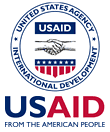

A Roundtable discussing “The Place and Role of Distance Education (DE) Within the Post-graduate Medical Education System in Kyrgyzstan” sponsored by non-profit organization CitiHope International was held on January 25, 2005 in Bishkek.
A Roundtable discussing “The Place and Role of Distance Education (DE) Within the Post-graduate Medical Education System in Kyrgyzstan” sponsored by non-profit organization CitiHope International was held on January 25, 2005 in Bishkek.

Partnering sponsors with CitiHope International included Kyrgyz higher medical education authorities, USAID and WHO representatives. Kyrgyzstan Ministry of Healthcare officers, heads of Manas Program for reforms in Kyrgyz healthcare system, “Zdrav Plus”, and other public organizations representatives took an active part in the discussion.
The Institute of Antimicrobial Chemotherapy (IAC) of Smolensk State Medical Academy (SSMA) was represented by its Director, Prof. Leonid Stratchounski, a member of the Russian Academy of Medical Sciences, and the Deputy Director, Vladimir Rafalski, D.Sc.
Prof. L. Stratchounski lectured on “The Role of Distance Education (DE) Methods in Post-graduate Physicians' Training”". Vladimir Rafalski spoke on “Advantages of DE Methods”. Their presentations contained materials based on five years' experience creating and performing DE on antimicrobial chemotherapy for the IAC.
Prof. Stratchounski proposed using existing course materials and software from IAC as a first step in Kyrgyz DE development, thus greatly reducing development time and cost.
Other participants of the Roundtable discussion were N.S. Isakov, Chief Administrator of the Manpower Policy and Organizational Management of the Kyrgyz Ministry of Healthcare, D.A. Adambekov, Rector of KSMA, Marat Turgunbaev, Coordinator of “Zdrav Plus”, T.Ch. Choubakov, Rector of Post-graduate Training Medical Academy, and Damira Biibosounova, Project Management expert for healthcare at USAID.
Participants of the Roundtable discussion unanimously agreed that DE is a new, advanced teaching method of post-graduate physicians' education that seems to be especially useful for professional training of family practitioners in Kyrgyzstan. They supported active implementation of DE in medical education because of the need in Kyrgyzstan. It was suggested that a panel be established to develop regulatory documentation for DE implementation in Kyrgyzstan. Participants noted that the experience gained through development of the same project in the Russian Federation should be maximally used.
Photos
(click an image to enlarge it)